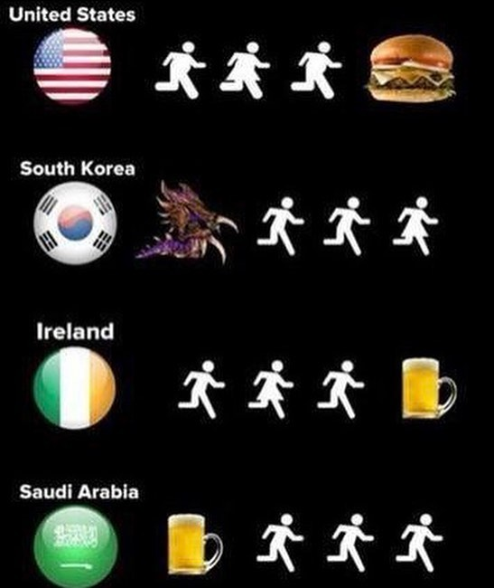
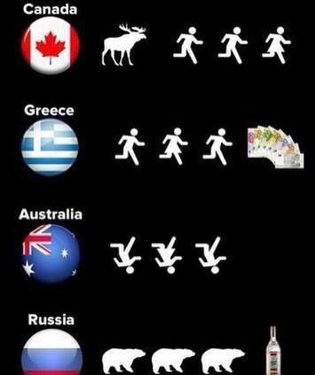

Found funny infographic “why people run” breakdown by country 😄 Born and raised in Russia, I never had to run away from bear 🐻 😂 also don’t drink vodka 👍🏼 (and I’m not an exception), however wouldn’t mind a glass of good wine or beer after a race or good training 🍷🍻 How about you guys? Where are you from and why do you run? — #irunthisbody #runaddict #marathontraining #marathon #trailrunning #trailrun #trailrunning #ultrarunning #ultrarunner
2018-10-30 14:10:01
Back to main page